LAST LECTURE
Computer-based visualization systems provide visual representations of datasets designed to help people carry out tasks more effectively.
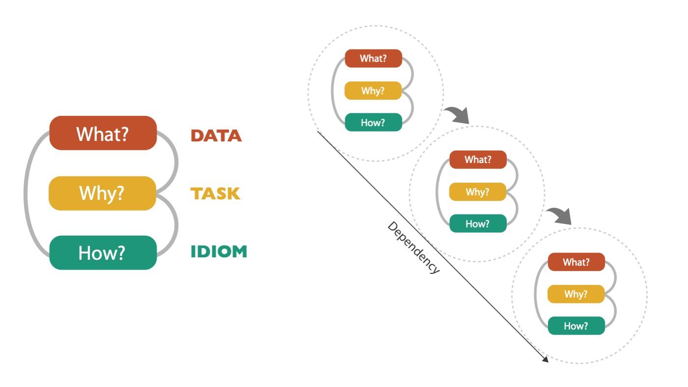
WHAT?
 Before you design a visualization, you need to understand the data. Here, we consider the semantics to describe the DATA TYPES and DATA ATTRIBUTES.
Before you design a visualization, you need to understand the data. Here, we consider the semantics to describe the DATA TYPES and DATA ATTRIBUTES.
THE THREE MAJOR DATA TYPES

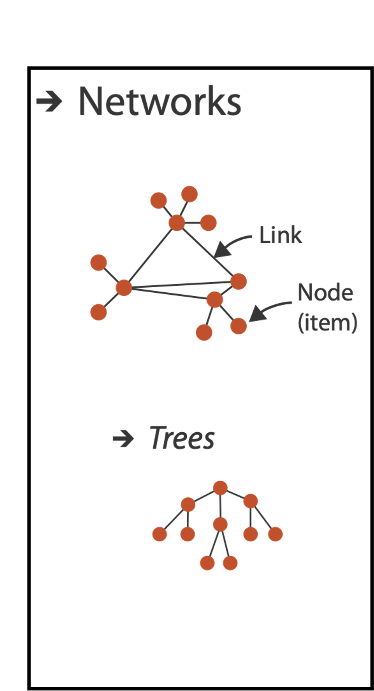

DATA ATTRIBUTES
WHAT?
Computer-based visualization systems provide visual representations of datasets designed to help people carry out tasks more effectively.

DATA SEMANTICS
What does this sequence of six numbers mean?
14, 2.6, 30, 30, 15, 100001 Two points far from each other in 3D space?
VIZ
DATA SEMANTICS
What does this sequence of six numbers mean?
14, 2.6, 30, 30, 15, 100001 Two points close to each other in 2D space, with 15 links between them, and a weight of 100001 for the link?
VIZ

DATA SEMANTICS
What about this data?
Basil, 7, S, Pear:
Food shipment of produce (basil & pear) arrived in satisfactory condition on 7th day of month
VIZ

DATA SEMANTICS
What about this data?
Basil, 7, S, Pear:
Basil Point neighborhood of city had 7 inches of snow cleared by the Pear Creek Limited snow removal service
VIZ

DATA SEMANTICS
What about this data?
Basil, 7, S, Pear:
Lab rat Basil made 7 attempts to find way through south section of maze, these trials used pear as reward food
VIZ

SEMANTICS
The meaning of a word, phrase, sentence, or text.
Basil, 7, S, Pear
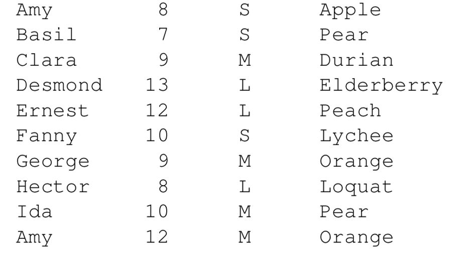
SEMANTICS FOR DATA
Semantics
- item: individual entity, discrete
- eg patient, car, stock, city
- “independent variable”
- attribute: property that is measured, observed, logged…
- eg height, blood pressure for patient
- eg horsepower, make for car
- “dependent variable”
Data Table

ITEM: Person
ATTRIBUTES: Name, Age, Shirt Size, Favorite Fruit
OTHER DATA TYPES
- Links
- express relationship between two items
- e.g/ friendship on facebook, interaction between proteins
- Positions
- spatial data: location in 2D or 3D
- e.g. pixels in photo, voxels in MRI scan, latitude/longitude
- Grids
- sampling strategy for continuous data
WHAT?
Computer-based visualization systems provide visual representations of datasets designed to help people carry out tasks more effectively.
DATASET TYPES: TABLES
Flat Table
One ITEM per row
- often called an observation
Each column is an ATTRIBUTE
- often called a variable
A cell holds the VALUE for an item/attribute pair
A UNIQUE key can be used (implicitly or explicitly) to identify each item even if they share all measured attributes

FLAT TABLE EXAMPLE

MULTIDIMENSIONAL TABLES
indexing based on multiple keys (eg genes, patients)

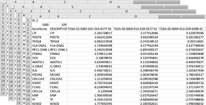
NETWORKS
Network/graph nodes (vertices) connected by links (edges). A tree is special case: no cycles, often have roots, and are directed.
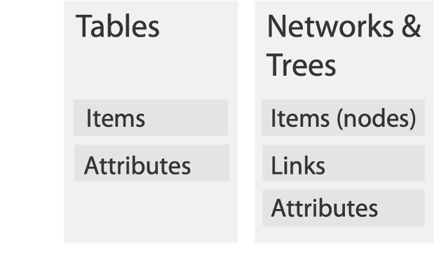
FIELDS
SPATIAL FIELDS 1
Attribute values associated w/ cells cell contains value from continuous domain (eg temperature, pressure, wind velocity measured or simulated).
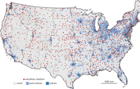
SPATIAL FIELDS 2
- Attribute values associated w/ cells.
- Cell contains value from continuous domain
- (eg temperature, pressure, wind velocity)
- Measured or simulated.
- Major concerns
- sampling:
- where attributes are measured
- interpolation:
- how to model attributes elsewhere
- grid types
- sampling:
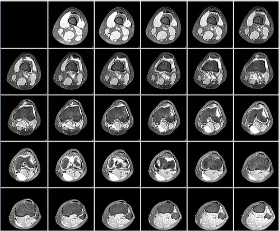
SPATIAL FIELDS 3
- Attribute values associated w/ cells.
- Cell contains value from continuous domain
- (eg temperature, pressure, wind velocity)
- Measured or simulated.
- Major concerns
- sampling:
- where attributes are measured
- interpolation:
- how to model attributes elsewhere
- grid types
- sampling:
- Major divisions - attributes per cell:
- scalar (1)
- vector (2)
- tensor (many)
GEOMETRY
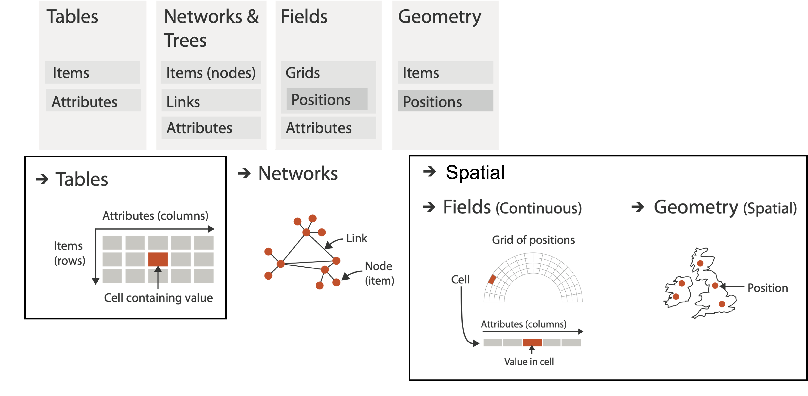
GEOMETRY 2
- Shape of items
- Explicit spatial positions / regions
- points, lines, curves, surfaces, volumes
- Boundary between computer graphics and visualization
- graphics: geometry taken as given
- vis: geometry is result of a design decision

COLLECTIONS
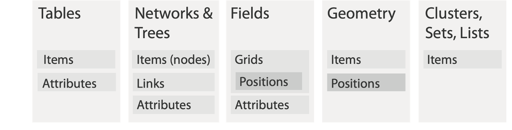
COLLECTIONS 2
Grouping Items:
- sets
- unique items
- unordered
- lists
- ordered
- duplicates possible
- clusters
- groups of similar items
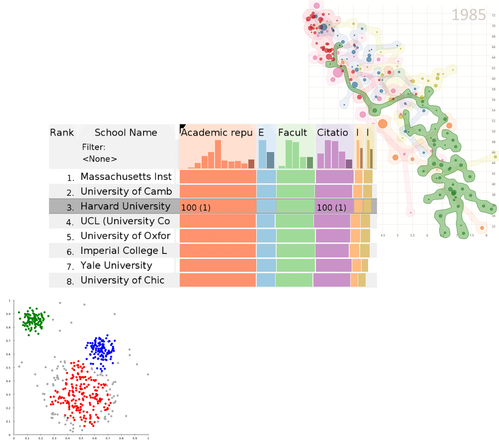
DATA TYPES
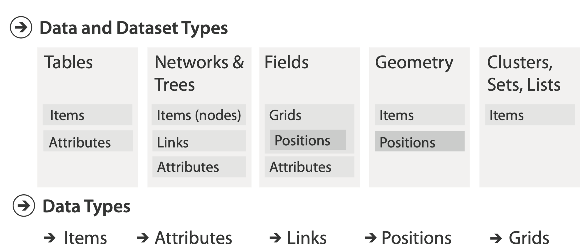
ATTRIBUTE TYPES
- Categorical (nominal):
- compare equality
- no implicit ordering
- Ordered:
- ordinal
- less/greater than defined
- Quantitative:
- meaningful magnitude
- arithmetic possible
EXAMPLE
Categorical
Ordinal
Quantitative
EXAMPLE
Categorical
Ordinal
Quantitative
ADDITIONAL SEMANTIC COMPONENTS
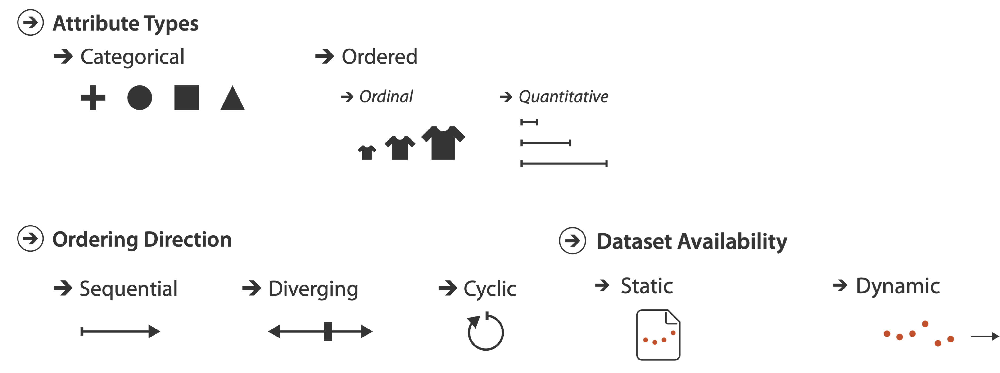
DATA ABSTRACTION
GOAL: Translate from domain-specific language to generic (and consistent) visualization language.
- Identify dataset type(s) and attribute types.
- Identify cardinality.
- how many items in the dataset?
- what is cardinality of each attribute?
- number of levels for categorical data?
- range for quantitative data
- Consider whether to transform the data.
- guided by your understanding of the task.
MODELS: DATA VS CONCEPTUAL
- Data Model
- mathematical abstraction
- sets with operations, eg floats with * / - + variable data types in programming languages
- Conceptual Model
- mental construction (semantics)
- supports reasoning
- typically based on understanding of tasks
- The Data Abstraction process relies on conceptual model for transforming data if needed
MODELS: EXAMPLE
- Data Model: floats
- 32.52, 54.06, -14.35,
- Conceptual Model:
- temperature
- Possible data abstractions:
- QUANTITATIVE: continuous to 2 significant figures:
- TASK: Forecasting the weather
- ORDINAL: Hot, Warm, Cold:
- TASK: Deciding if my bath water is ready
- CATEGORICAL: Above Freezing, Below Freezing:
- TASK: Deciding if I should leave the house today
- QUANTITATIVE: continuous to 2 significant figures:
DERIVED ATTRIBUTES
Derived attribute: Data computed from original (collected, observed) attributes.
SUMMARY
Computer-based visualization systems provide visual representations of datasets designed to help people carry out tasks more effectively.